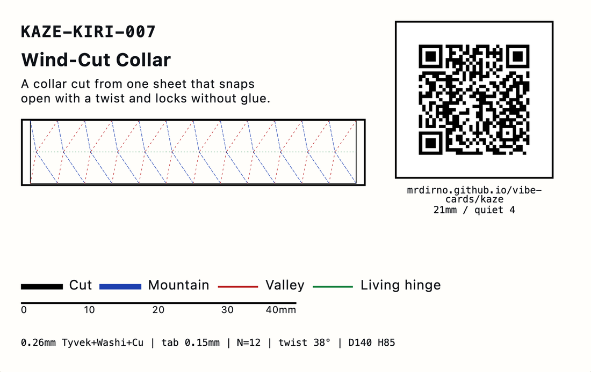

The front is not a picture of the collar. It is the collar’s own surface, printed edge to edge, drawn by the same shear rule that shapes the object. Two colours and nothing else. The flat square at the lower right is where the chip sits.
What it is
A collar. One flat strip, cut from a single sheet, folded along its own lines and closed into a ring that sits round your neck. It is 140 mm across the inside and 85 mm tall. Nothing is glued and there are no screws.
It packs flat. Press it and it collapses into a ring you could put in a bag; twist it and it stands back up. Three wedge-shaped tabs push into three slots and hold it there.
The card calls it a Kaze-Kiri Wind-Cut Collar. Kaze-kiri is Japanese for wind-cut. The name is doing two jobs: the collar is cut, and it is cut full of slits so air moves through it.
The sheet is 0.26 mm thick and it is three things pressed into one. Tyvek is spun plastic — the stuff tough express envelopes are made from, very hard to tear. Washi is Japanese paper, soft and warm to touch. The third layer is copper foil.
It is cut with twelve slits for air. They are spaced 137.5 degrees apart round the ring, so no two of them ever line up. More on that below, because the book has used that angle before.
- FLAT
- 439.82 mm around × 85 mm tall · that is π × 140
- UNITS
- 12 along the strip · base 36.65 mm each
- DEPLOYED
- 140 mm inside diameter · 85 mm tall
- STAND-OFF
- sits 12 mm clear of the neck, so air can move
- MATERIAL
- 0.26 mm — Tyvek, washi and copper in one laminate
- LOCK
- 3 wedge tabs into 3 notches · tab 10 mm where it leaves the sheet, notch 8 mm — as drawn they do not fit, see below
- HINGE
- a living hinge that is also the joint · the package says 0.3 mm of material left, which is more than the whole 0.26 mm sheet
- VENTS
- 12 slits, 137.5° apart — the golden angle
- TWIST
- 38° between the bottom rim and the top rim
- LICENCE
- MIT
Two folds, one collar
This is the good part, and it is the reason this card exists rather than being a nice paper ring.
A Kresling fold makes a tube twist as it collapses. A Miura fold makes a sheet pack flat and open again on a single pull. Cross the two and you get a collar that does both: it lies flat, and one twist stands it up.
Take them one at a time. Crush an empty drinks can and it does not crumple at random: it buckles into a ring of slanted triangles, and the top turns as it goes down. Biruta Kresling studied that. A Kresling pattern is that buckle drawn on purpose, so a tube collapses the same way every time.
The other one is a grid of slanted four-sided panels worked out by Koryo Miura for folding solar panels on a satellite. A Miura fold has one useful property above all: pull two opposite corners and the whole sheet opens at once. One motion, not a hundred creases.
Here the twist is 38 degrees, and every one of the twelve units round the ring shares it equally.
Now the flat sheet the two folds share. The strip is 439.82 mm long, which is 140 multiplied by pi — the way round a 140 mm circle. Divide that by twelve and each unit is 36.65 mm wide.
The lean is where the two folds meet. Thirty-eight degrees of a 439.82 mm ring is 46.43 mm of travel, so every fold line slides that far sideways over the 85 mm height — and half of it by the time it reaches the hinge at the middle.
Half of 46.43 is 23.21 mm, which is less than one unit’s 36.65 mm. So the second family of folds leans back across the unit it started in, and the two families cross. That crossing is what packs the collar flat.
THE CHEAPEST CARD IN THE BOOK
Here is the part worth saying plainly. A card that crosses two fold patterns ought to be the most expensive one in the book. This one was the cheapest, and the reason is simply that both halves had already been paid for.
Card 005 spent a whole card working out the Kresling twist. Card 006 spent a whole card working out the one-pull Miura deploy. Card 007 took both, unchanged, and spent its own effort on the one thing neither had: making them share a sheet.
AND THE VENTS ARE CARD 004’S ANGLE
Card 004 set twelve petals 137.5 degrees apart. That is the angle a sunflower turns between one seed and the next, and it is the one turn that never puts a seed behind an earlier one.
The twelve vents here use the same angle for a different job: so that no two slits ever line up, in a collar you can see through. Same rule, second use, no new work. That is what a reusable tool looks like when it turns out to be useful twice.
How to build it
AN EVENING. A KNIFE, A RULER AND ONE LONG SHEET.
The full-size cutting file is not on this page yet. What follows is what the drawing says and what to check when you have it — and the wishing well at the bottom is how you ask for it.
-
Print at 100%
The file is drawn 1:1 in millimetres. Print it at 100% or “Actual size”. The strip is 439.82 mm long, so no home printer takes it in one piece — tile it across A4 or Letter and trim the overlap.
“Fit to page” is the one setting that ruins this. It shrinks the sheet a few percent, which you cannot see on paper and cannot miss in the lock: the tabs are cut to a tenth of a millimetre.
-
Check the 40 mm bar with a real ruler
The back of the card prints a bar marked 0 to 40 mm for exactly this moment. Put a real ruler on it. It must measure 40 mm. If it does not, your print scale is wrong — change the setting and print again.
This bar is worth thirty seconds of your time. The one that arrived in this package was four times out, which is the one fault a scale bar must never have. It was replaced. The log at the bottom has the story.
-
Cut every solid black line through
Solid black is a cut. Take the blade all the way through. That is the outline of the strip, the three tab slots, and the twelve slits for air. The twelve units stay joined to each other — you are not cutting them apart.
-
Score the mountains and the valleys separately
Blue lines and red lines fold in opposite directions. A mountain points up towards you, a valley points away. So score all the blue ones, turn the sheet over, and score all the red ones from the other side.
The living hinge is the green line down the middle. It is a fold that is also the joint — no pin, no pivot. Make it with a kiss cut: a cut that goes only part way through, leaving 0.3 mm. Never go through.
-
Fold every line right over, then open it again
Crease each fold a full 180° so the two sides touch, then open it. Do the blue ones and the red ones in the direction you scored them. Get one backwards and the collar will not turn.
-
Roll it round and seat the three tabs
Bring the two ends together and push each wedge tab into its notch. Try this on scrap first. Where a tab leaves the sheet it is 10 mm tall and the notch it enters is 8 mm, so as drawn it will not go in. No glue either way — the wedge is what holds it.
Cut one tab and one notch out of scrap before you cut the sheet. One of those two numbers is wrong and nobody knows which, because nobody has cut one. Widen the notch or narrow the tab root, whichever your paper takes better, and then tell us which it was — the box at the bottom of this page goes to a person, and this page changes.
3 TABS · ONE EVERY 4 UNITS Twelve units and three tabs means one tab every four units, 120 degrees apart. Seat them in that order rather than going round, so the ring closes evenly instead of pulling to one side.
Then twist it, let it go, and put what happens in the wishing well at the bottom of this page. Nobody has done this. You would be the first.
What you already have
This is card 007, and almost none of it was paid for by card 007. That is the point of the book: a later card should cost less than an earlier one, because it borrows joints that already work instead of inventing new ones.
The tab-and-slot lock, from card 001. A tab cut slightly oversize for its slot, so it jams rather than slides.
The card-back layout, from card 002. Where the code, the key, the ruler and the title block go.
The safe-zone check, from card 003. Measure the artwork rather than trusting the file that says how big it is.
The living hinge and the 137.5° spacing, both from card 004. Two tools off one card.
The Kresling twist, from card 005, and the one-motion deploy, from card 006. Those two are the whole mechanism.
One solver. Give it a number of units, a diameter, a height, a twist angle and a material thickness.
It gives back a flat pattern that folds the two ways at once, with the tab positions already placed and every fold angle worked out.
Any later card that needs a tube to twist open and pack flat gets that for free, and does not have to derive the crossing again.
Six tools in, one tool out. That is the whole argument of the book, on one card.
Reading the sheet
FOUR MARKS, AND THEY MEAN DIFFERENT THINGS
Blue and red are both dashed, so on the pattern the colour is the only thing that tells a mountain from a valley. Print in colour, or mark every red line before you start cutting.
What is drawn and what is measured
Nobody has measured any of this. Here is exactly where that matters, in order of how much it would change what you get.
Nothing has been built. No prototype has been cut and no fold has been tested. Every tolerance on this page is a calculation, measured on a drawing file rather than on an object.
No slip test, no micro-CT scan, no wash test. Nobody has pulled a tab out to see what holds it, looked inside the laminate, or put the collar through water.
No phone has scanned the printed card. The square code was decoded in software, from the file. How it prints, and whether the contrast is good enough for a camera, has not been measured.
The laminate is assumed not to come apart. Bending it round a 0.4 mm radius is assumed safe from a Tyvek data sheet. That sheet is about Tyvek, not about this three-layer stack, which nobody has folded.
The 0.3 mm living hinge is a machine setting nobody has run. It assumes a 40 W carbon-dioxide laser at 15% power moving at 300 mm a second. No physical cut was made at those numbers.
The solar and acoustic uses are adaptations, not results. The package suggests the same geometry could hold thin solar film or damp sound. Those are ideas about the shape. Neither was built or tested.
The full-size cutting file is not on this page yet. The card sends you here for it and it is not here. That is the biggest missing thing on this page, it is named rather than glossed, and it is the first wish this well should get.
None of this makes the design wrong. It makes it untested, which is a different thing, and the difference is worth a whole section on the page a stranger reads.
Licence
This card is MIT. Do what you like with it, including sell it, as long as the copyright line travels with it. Cards 001, 002 and 004 in this book are CC BY-NC, which forbids selling. This one is not, and that is not an oversight — its author set it to MIT and it was left the way they set it.
MIT also says there is no warranty of any kind. On a design nobody has built, read that line twice.
vc1|KAZE-KIRI-007|Kaze-Kiri Wind-Cut Collar|2026-08|MIT|vibe-cards
The chip carries that line in plaintext, next to the address. It needs no server and no network to say what this card is — so if this page ever dies, the card still knows.
PRINT IT YOURSELF — this card is a template in Card Studio, the same free app that printed the original. It opens holding this card, both faces.
The log
This card’s address can never change, so anything new about it has to land here: corrections, a material that turned out to work, a tab size that turned out to be wrong. Tap the card again in a month and there should be something on this page that is not on it today.
The first entry this page is waiting for is from whoever folds one.
Want it changed?
Start with the obvious one: the full-size cutting file, on this page. Then anything else — a smaller collar, a version in plain card you can buy today, a sheet that tiles onto A4 with nothing to trim, a cut file your machine likes. Whatever would make it work for you.
No account, no email, nothing to sign up for. Just write and tap. It goes into a queue someone works through, not into an inbox.